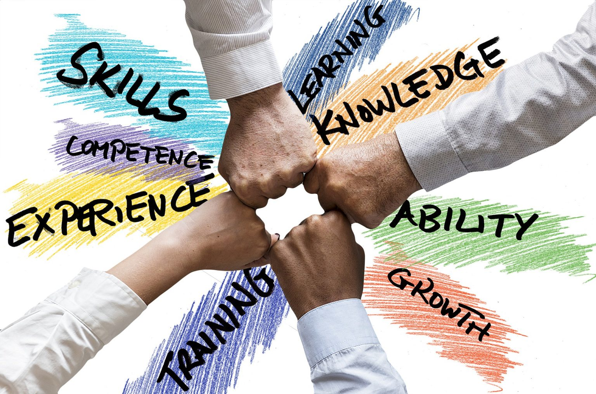

Developing Resilience for Long-Term Success
By: Nicholas
What is Resilience?
Resilience is more than just overcoming adversity; it’s a mindset that can help you navigate life’s challenges and setbacks. It’s the ability to bounce back from difficult situations and to grow stronger from them. But what exactly is resilience, and how can we develop it? In this section, we’ll explore the definition of resilience, the key components that make up a resilient mindset, and how you can cultivate resilience in your own life. Whether you’re facing a personal challenge, a setback at work, or a global crisis like the one we’re experiencing now, resilience is a valuable tool for long-term success. Let’s dive in and explore what it takes to become more resilient.
ad space
Why is Resilience Important for Success?
In the face of adversity, it's easy to become disillusioned and give up. But those who have developed resilience are able to push through challenges and achieve long-term success. Resilience is the key to persevering through difficult times, and it requires a mental toughness and a growth mindset that can be learned and developed over time. In this article, we'll explore why resilience is essential for success, and provide tips on how to cultivate resilience in your own life. Whether you're facing setbacks in your career, personal life, or health, the ability to bounce back and persevere can mean the difference between giving up and achieving your goals. So if you're looking to achieve long-term success, developing resilience is a crucial first step.
ad space
How to Develop Resilience
Resilience is the ability to bounce back from setbacks, adapt to change, and overcome challenges in pursuit of our goals. For anyone striving for long-term success, developing resilience is crucial. But how can resilience be developed? In this section, we explore practical strategies for cultivating resilience in your personal and professional life. From building a growth mindset to nurturing a strong support network, we provide insights and tips grounded in scientific research and real-world experience. Discover how you can train yourself to become more resilient and better equipped to navigate the ups and downs of life, work, and beyond.
ad space
The Benefits of Resilience
Resilience is often the key to success in life. For those who can weather the storms, rebound from setbacks, and adapt to change, the world is full of possibilities. But what exactly are the benefits of resilience? How does it help individuals and teams to achieve long-term success?
One of the most obvious benefits of resilience is the ability to bounce back from adversity. Whether facing a personal setback, a financial crisis, or a major setback in a project, those with high levels of resilience are more likely to pick themselves up and keep going. This ability to recover from setbacks quickly allows individuals and teams to move on from failures and to focus on new opportunities.
Another benefit of resilience is that it helps individuals to develop a growth mindset. When we face challenges, our brains are wired to look for solutions, to experiment, and to learn from our mistakes. This process of learning and growth is essential in developing new skills, building stronger relationships, and achieving our goals.
Resilience also helps individuals to cultivate a sense of purpose and meaning in their lives. By weathering challenges and by overcoming obstacles, individuals gain a deep sense of satisfaction and pride in their accomplishments. This sense of purpose is not only deeply fulfilling, but it also helps to motivate individuals to continue pursuing their dreams and goals.
Finally, resilience is essential for those who seek to achieve long-term success. In a world that is constantly changing, those who are best able to adapt and to innovate are often the ones who come out on top. By developing resilience, individuals and teams can stay ahead of the curve, anticipating changes in their environment and responding proactively to new opportunities.
In short, resilience is a vital asset for anyone seeking long-term success in life. By bouncing back from adversity, embracing a growth mindset, finding purpose and meaning, and adapting to change, individuals and teams can overcome even the greatest challenges and achieve their most ambitious goals.
ad space
Conclusion
After reading through our comprehensive guide on developing resilience for long-term success, you now have the tools and knowledge to start cultivating this valuable trait in your life. But remember, developing resilience is not a one-time task – it's a continual process that requires patience, practice, and persistence.
Through our research, we have discovered that resilience is critical to facing challenges and achieving success in all aspects of life, including career, relationships, and personal goals. Resilience is not only the ability to bounce back from adversity but also the ability to adapt and learn from difficult experiences.
In conclusion, building resilience takes time and effort, but the benefits are worth the investment. It can help you to overcome obstacles, cope with stress, and maintain positive mental health. It's not about eliminating challenges but learning to navigate them with ease.
We hope our guide has provided valuable insights and practical exercises that you can apply to your daily life. Remember, resilience is not a destination but a journey – and you've already taken the first step by learning about it. Embrace the challenge, stay motivated, and continue to grow stronger with every experience.
ad space